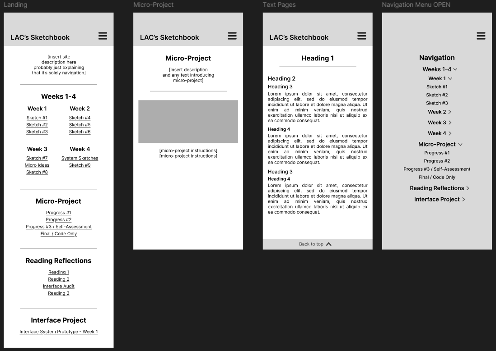

I already had my 3 mobile pages done last week, so my big change this week was adding what the menu would look like when expanded. The hamburger menu that sits on the top right corner would expand to fill the whole screen until you click a link or click the menu again.
Other than the aforementioned new hamburger menu screen, I only added new headings (3 & 4), which is best displayed on my “Text Page” (the third frame). The new frame also shows the updated type hierarchy, though the navigation menu will have more spacing.
I didn’t previously have anything that displayed visual system status, which is addressed with the new frame of the open hamburger menu. In that frame, I showed that the hamburger menu is open by making it bigger and a different colour, though I’m unsure if this is the best solution. Additionally, the navigation itself uses arrows to show which sections are open, like the modules on Canvas do.
I’m not sure, though I think the navigation menu is ironically a bit hard to navigate because of how many sections and links I have. I’m unsure if my current solution is the best or not.